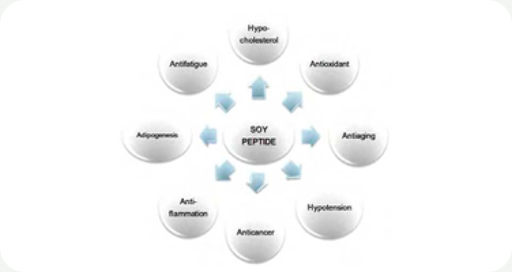

HOME
HOME- 원료소개
- 화장품원료
- Hydro-Soy 1000
Ingredient research
Hydro-Soy 1000
피부와 모발을 위한 대두 단백질
01 / Overview & Strengths
개요 & 특장점
Hydro-Soy 1000는 동물성 가수분해단백질의 대체재로 사용 가능한 물질입니다. Hydro-Soy 1000의 뛰어난 컨디셔닝 효과는 헤어케어 제품에 탁월한 효과를 줄 수 있습니다. 피부와 모발의 보호막 형성에 도움을 주며 또한 클렌저와 샴푸 같은 제품의 포밍제형에 도움을 줍니다.
※ 자세한 자료는 직접 문의 부탁드립니다.
Product features / Product Strengths
- 보습 효과
- 주름방지 효과
- 피부강화 효과
- 손상모발 치유효과

02 / Technical Information
기술 자료
Product Name : Hydro-Soy 1000
원료 기본 규격 및 제품 카탈로그
- INCI Name
- Hydrolyzed Soy Protein
- CAS No.
- 68607-88-5
- M.O.Q.
- 1KG
- Pack Size
- 1/5/10/20KG
- Appearance
- Liquid
- Dosage
- 1~10%
※ 운영 사이트의 공개 정보를 반영했습니다. 자세한 자료는 직접 문의 부탁드립니다.